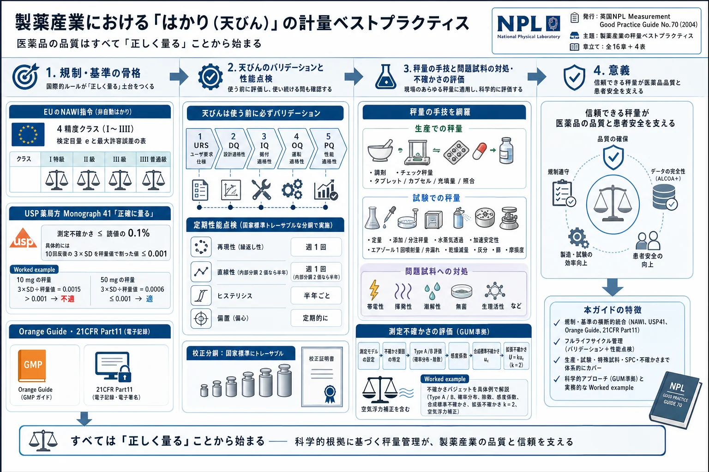

製薬産業における「はかり（天びん）」の計量ベストプラクティス——NPL Good Practice Guide No.70 全訳

<!-- 方針: ほぼ全訳＋必要に応じた補足。原文（英語・NPL公式ガイド、全16章55頁）構成に沿って訳出。原本PDFをPyMuPDFで全55ページ確認、埋め込みラスター画像0。図（Fig1/2直線性・Fig2偏置位置・Fig3シューハート図・Fig4管理図・分布の3図）はいずれも単純な模式線図で、軸範囲・形状・位置などの全情報が本文に記述されているため、該当箇所で忠実に文章描写した（データ図ではないため捏造リスクなく本文で完全再現）。全表（表1〜4・不確かさバジェット表・空気浮力表・除数表）を原文の全数値で転記。「> 補足:」は訳者注。 -->
書誌情報
- 原題: Measurement Good Practice Guide No. 70 — Weighing in the Pharmaceutical Industry
- 著者: Ted Scorer（Scorer Consultancy）・Michael Perkin（National Physical Laboratory）・Mike Buckley（South Yorkshire Trading Standards Unit）
- 発行: 英国 National Physical Laboratory（NPL、国立物理研究所）, Teddington, Middlesex, UK. 2004年6月. ISSN 1368-6550. © Crown Copyright 2004
- 種別: 計量ベストプラクティスガイド（公的機関の技術指針）
- 助成: UK Department of Trade and Industry（貿易産業省）の National Measurement System Directorate
補足: 本稿は、英国の国家計量標準機関である NPL（National Physical Laboratory、国立物理研究所） が発行した公式の「計量ベストプラクティスガイド」である。テーマは、製薬産業における秤量（はかり・天びんで質量を量ること） をどう正しく行うか。医薬品のQC（品質管理）は、突き詰めれば「原料や製品を正確に量る」ことに立脚しており、天びんの誤差は最終製品の品質判定を直接左右する。本ガイドは、①適用される規制、②使われる天びんの種類・性能・バリデーション、③各種の秤量手技、④データ解析と測定不確かさの計算、を体系的に解説する。日本の読者には、「医薬品GMP／GLPにおける天びんの選定・据付・校正・日常点検・不確かさ評価」を一冊にまとめた実務教科書、と考えると位置づけが分かりやすい。2004年の英国の文書のため、規制の名称（MCA→現MHRA等）は当時のもの。
用語の整理（訳者による前置き）
- NAWI指令（Non-Automatic Weighing Instruments Directive、非自動はかり指令）＝EUの計量器規制（90/384/EEC）。取引・医薬品試験など特定用途の天びんに適用。
- 検定目量 e（verification interval）／実目量 d（actual scale interval）＝法定計量上の目盛間隔。天びんは精度により4クラス（I 特級／II 高級／III 中級／IIII 普通級）に分類。
- M刻印／CE刻印＝計量法適合（M）／EU指令適合（CE）の刻印。
- USP Monograph 41＝米国薬局方の天びんに関する規定。「正確に量る（accurately weighed）」の定義（測定不確かさ≤読値の0.1%）と最小秤量を定める。
- Orange Guide＝英国MCA発行の《製薬製造・流通業者のための規則と指針》。
- 21 CFR Part 11＝米国FDAの電子記録・電子署名規制。
- バリデーション5段階＝URS（ユーザ要求仕様）→DQ（設計適格性）→IQ（据付時適格性）→OQ（運転時適格性）→PQ（性能適格性）。
- 性能点検4項目＝再現性（reproducibility）・直線性（linearity）・ヒステリシス（hysteresis）・偏置誤差（eccentricity、偏心荷重）。
- GUM＝《計測における不確かさの表現ガイド》（ISO）。Type A＝統計的に評価する不確かさ、Type B＝それ以外の手段で評価。拡張不確かさ＝合成標準不確かさ×包含係数 k（通常2、信頼水準約95%）。
- OIML＝国際法定計量機関。分銅のクラス（E1/E2/F1/M1…）を規定。
要旨（Abstract）
本文書は、製薬産業で秤量を行う際に採用すべきベストプラクティスの手引きを意図したものである。製薬の秤量に適用される現行の規制の議論、典型的に使われる天びんの種類・性能・バリデーションの説明、および用いられうる各種の秤量スタイルの紹介を含む。結論として、いくつかのデータ解析法と不確かさ計算の方法を説明する。
1. 序論
製薬産業は伝統的に、研究開発（R&D）・一次操作（primary operations）・二次操作（secondary operations）の3部門に分けられる。
1.1 研究開発（R&D）
研究開発の役割は次のとおりである。
- 新しい薬理活性化合物の発見
- 既存化合物の新しい剤形の開発
- 既存の製造プロセスの改善
新規化合物の開発は、実験室規模で行われる生物学的・化学的プロセスを伴い、多くの場合 mg スケールの操作を含む。新規化合物は薬理活性についてスクリーニングされ、大規模施設では年間数千化合物に及ぶ。最初のスクリーニングを通過した化合物は、実験室または小規模パイロットプラントでさらに製造され、追加試験に供される。この段階を通過した少数の化合物が臨床試験の段階に入る。臨床試験を通過して承認された化合物については、臨床試験が、治療に有効な最も適切な剤形と用量水準を決定する。
1.2 一次操作
一次操作は、薬理活性化合物の製造を担う。生物学的・化学的、場合により滅菌のプロセスを含みうる。プロセスは連続式またはバッチ式で運転される。製造される化合物によっては、バッチサイズは1トンを超え、容量10万リットル超の容器を用いることもある。
1.3 二次操作
二次操作は、患者が使用するのに適した剤形の調製を含む。剤形は1つ以上の薬理活性化合物と、多数の他の成分を含む。最も一般的な剤形は、錠剤・カプセル・注射剤・クリーム・軟膏・エアゾール・水性点鼻スプレー・シロップである。
剤形は目的と最適な送達手段に応じて選ばれる。同じ化合物が複数の剤形で製造されることもある。喘息治療では、同一化合物が、発作の即時治療用のエアゾールと、発作予防用の錠剤として供給されうる。二次操作は典型的に物理的プロセスで、通常バッチ処理で行われる。錠剤製造では100万錠を超えるバッチサイズが一般的で、エアゾールや注射用製剤では10万単位を超えることもある。
剤形の処方には、1つ以上の薬理活性化合物・希釈剤・噴射剤・安定化剤・乾燥剤・結合剤・増量剤などの成分が必要となる。
錠剤処方の例として、パラセタモール（アセトアミノフェン）とワルファリンを挙げる。パラセタモール は一般的な鎮痛薬で、典型的に500 mg錠として販売される。「500 mg」は錠剤中に存在する活性化合物の公称重量を指す。パラセタモール錠の重量は約525 mgで、追加分は製造時の結合を助ける化合物である。ワルファリン は血液凝固を止める抗凝固錠で、0.5 mg・1 mg・2 mg・5 mgなど各種の力価で患者に供給される。「重量」は同様に活性化合物の公称重量を指す。1 mgの錠剤を製造・取り扱うのは実際的でないため、これらの錠剤にはデンプンなど不活性な増量剤も処方に含まれる。
小規模な製薬企業では、R&D・一次・二次製造が同一拠点にあることもある。大企業では3操作が別々の拠点で、多国籍企業では複数国にまたがって行われることもある。これらすべての操作で、広範囲の天びん・はかりを用いた多数の秤量が行われる。
2. 規制当局
すべての製薬R&Dと製造は、国内・国際の規制機関によって統制される。英国では Medicines Control Agency（MCA、医薬品管理庁） が統制当局で、《製薬製造・流通業者のための規則と指針》（通称 Orange Guide）[1] を発行する。英国で販売する医薬品を製造するには、製品と製造施設がMCA発行のライセンスを保持し、MCA査察官の査察を受ける。ライセンス取得後も定期査察（通常年1回、大規模拠点では年数回に分割）が続く。
Orange Guideに加え、英国薬局方委員会事務局が 英国薬局方（BP）[2] を発行し、特定の試験の実施法と多数の一般試験・一般化合物の規格を各条（monograph）として収載する。欧州薬局方の各条は明確に区別・相互参照される。製造業者が新化合物やジェネリックのブランド版のライセンスを求める際は、実施する試験と適用する限度を規定しなければならず、BPに規定がある場合は、業者が設定する限度はBP規定と同等以上でなければならない。
同様の規制当局が欧州各国に存在し、各国での販売には各国当局発行の個別ライセンス、または各国要件を満たす欧州全域ライセンスが必要となる。英国の製造業者はEUの一般指令にも従う。
米国で販売するには、FDA（Food and Drugs Agency） が製品・製造施設のライセンスを発行する。FDAは 21 Code of Federal Regulations（21 CFR）[3] を発行し、米国薬局方協会は 米国薬局方（USP）[4] を発行する（試験と規格の各条を収載）。FDAのライセンスは21CFRとUSPを用いた承認査察を伴う。世界の多くの国が独自の当局・規制をもち、欧米当局と異なる追加・修正要件を定めるものもある。世界で広く製品を販売するには、すべての当局の要件を満たす必要がある。
3. 規制
製薬産業での天びん使用を統制する規制には、非自動はかり指令[5]・USP Monograph 41・Orange Guide・21 CFRがある。
3.1 非自動はかり指令（NAWI指令）
英国では、伝統的に度量衡法が「重量で販売される商品（りんご1ポンド、石炭1ハンドレッドウェイト等）」の取引を統制していた。EUでは加盟国間の自由貿易を促進するため、度量衡法を調和する 指令90/384/EEC が発行された。同指令 Article 1(2)(a) は規制対象を次の用途と定義した——商取引の質量決定／通行料・関税・税・賞与・罰金・報酬・補償などの計算のための質量決定／法令適用（裁判の鑑定を含む）のための質量決定／医療での患者体重測定（監視・診断・治療目的）／薬局での処方調剤のための質量決定、および医療・製薬の試験室で行う分析の質量決定／公衆への直接販売・プレパッケージ作成のための質量に基づく価格決定。
NAWI指令は英国法に「1995年非自動はかり（EEC要件）規則」（Statutory Instrument No.1907）として組み込まれ、1995年9月1日施行だが、産業界の適応時間を確保するため10年の適用猶予が課され、2003年1月まで強制されなかった。規則の適用5「医療・製薬の試験室で行う分析の質量決定」が、度量衡法を製薬産業に拡張した。WELMEC（西欧法定計量条約）は「製薬試験室とはヒト用医薬品製造業者の品質管理試験室であり、これら医薬品製造業者のR&D試験室は含まない」と定義した。
EU内で販売される電気機器はすべて、適用規制（低電圧・電磁・無線周波数干渉等）に適合することを示す CE（Conformance European）刻印 が必要である。2003年1月1日以前に使用されていた天びんは無期限に使用継続可能。2003年1月1日以降に規制対象用途で購入する天びんは、CE刻印に加えて計量学的承認（M刻印）が必要である。
M刻印を得るには3段階を経る——設計承認（規制承認の許容仕様内で設計し、国家当局の承認を求める）／第1段階検証（承認設計どおりに製造・試験されたことを確認）／第2段階検証（顧客施設への据付時に実施。最低でも電源投入と校正。機種により製造業者訓練を受けた技術者による据付・試験が必要）。
NAWI指令は 実目量 d と 検定目量 e の2用語を用い、天びんを4精度クラスに分類する。
表1 天びん精度クラスの仕様（検定目量 e）
| クラス | 名称 | 検定目量 e |
|---|---|---|
| I | 特級（Special） | 0.001 g ≤ e |
| II | 高級（High） | 0.001 g ≤ e ≤ 0.05 g、および 0.1 g ≤ e |
| III | 中級（Medium） | 0.1 g ≤ e ≤ 2 g、および 5 g ≤ e |
| IIII | 普通級（Ordinary） | 5 g ≤ e |
補助表示装置のない計器では d = e。補助表示装置のある計器では、e = 1 × 10ᵏ g（k は0または整数）、d < e ≤ 10 d（ただしクラス1で d < 10⁻⁴ g の場合は e = 10⁻³ g）。
NAWI指令は、天びん試験時の 最大許容誤差 も規定する。これは精度クラスと負荷に依存する（表2）。
表2 各精度クラスの最大許容誤差（据付時の原試験値。据付後の試験では表の2倍が許容される）
| 負荷 m の範囲（クラス I ／ II ／ III ／ IIII） | 最大許容誤差 |
|---|---|
| 0≤m≤50,000e ／ 0≤m≤5,000e ／ 0≤m≤500e ／ 0≤m≤50e | ±0.5 e |
| 50,000e<m≤200,000e ／ 5,000e<m≤20,000e ／ 500e≤m≤2,000e ／ 50e≤m≤200e | ±1.0 e |
| 200,000e<m ／ 20,000e<m≤100,000e ／ 2,000e<m≤10,000e ／ 200e<m≤1,000e | ±1.5 e |
例：分解能0.0001 g・補助表示装置つきのクラスI天びんで0.1 gを正確に量る場合、最大許容誤差は ±1.0 e = ±0.001 g。補助表示装置つきの最小検定目量 e は0.001 gなので、分解能0.01 mg・0.001 mg・0.0001 mgの天びんでも最大許容誤差は ±0.001 gのまま。M刻印天びんでは、製造業者が検定範囲外の桁を網掛け・着色等で表示する（印字では括弧等で表示）。取引販売では検定桁でのみ価格計算する（分解能0.01 g・検定目量0.1 gで12.34 g表示なら12.3 gとして記録）。製薬産業では最小検定目量0.001 gより高い精度が要求されるため、提供される目盛分解能をすべて使うべきである。 クラスI（補助表示装置つき）では表2を超える社内限度を、クラスII/III/IIIIでは表2と同等以上の限度をユーザが適用しなければならない。
3.2 米国薬局方 Monograph 41
USP Monograph 41は、天びん試験に用いる分銅クラスと、天びんで量りうる最小重量を規定する。抜粋：
「薬局方の試験・定量は、容量・感度・再現性の異なる天びんを必要とする。別途規定なき限り、定量のため物質を『正確に量る（accurately weighed）』場合、その秤量は、測定不確かさ（ランダム誤差＋系統誤差）が読値の0.1%を超えない 秤量装置で行う。測定不確かさは、10回以上の反復秤量の標準偏差の3倍を秤量量で割った値が0.001を超えなければ 満足である。別途規定なき限り、滴定限度試験では、滴定液濃度の有効数字に対応する分析対象重量の有効数字を与えるよう秤量する。」
分解能0.01 mgの天びんで10 mgの分銅を10回反復秤量した例（表3）。この変動は仕様どおりに動作する大半の5桁天びんで典型的である。
表3 10 mg分銅の10回反復秤量結果
| 反復 | 結果 (g) |
|---|---|
| 1・6 | 0.01001 |
| 2・7 | 0.01002 |
| 3・8 | 0.01003 |
| 4・9 | 0.01004 |
| 5・10 | 0.01005 |
| 平均 | 0.01003 |
| SD | 1.4907 × 10⁻⁵ |
Monograph 41による測定不確かさ＝(3 × 0.0000149) ÷ 0.01000 = 0.00447。これは0.001より大きいため、この天びんは10 mg試料の正確な秤量に 不適 である。
同じ分散で50 mgの分銅を秤量した例（表4）。
表4 50 mg分銅の10回反復秤量結果
| 反復 | 結果 (g) |
|---|---|
| 1・6 | 0.05001 |
| 2・7 | 0.05002 |
| 3・8 | 0.05003 |
| 4・9 | 0.05004 |
| 5・10 | 0.05005 |
| 平均 | 0.05003 |
| SD | 1.4907 × 10⁻⁵ |
測定不確かさ＝(3 × 0.0000149) ÷ 0.05000 = 0.000894。これは0.001より小さいため、この天びんは50 mg試料の正確な秤量に 適 している。
補足: この worked example が USP41 の核心である。同じ天びん（同じ絶対バラつき）でも、量る量が小さいほど相対的な不確かさは大きくなる ため、「その天びんで正確に量れる最小重量」が決まる。10 mgは不適・50 mgは適、という数値例が、天びん選定の実務判断そのものを示している。
3.3 製薬製造・流通業者のための規則と指針（Orange Guide）
2002年版Orange Guideには、天びん・秤量操作への直接・間接の言及が多い。すべてPart 1（製造を統制する部分）に由来する。多くの引用で "should" が使われるが、ベストプラクティスを目指す組織はこれを "must"（〜しなければならない）と読むべきである。天びんを校正しない・記録を残さない等の決定を査察官に弁明できる状況は想定しがたい。
Chapter 4（EU製造指針）3.13：「出発原料の秤量は通常、その目的に設計された 別室の秤量室 で行うべき」。3.40：「生産・管理操作に適切な範囲・精度の天びん・計量機器を利用可能にすべき」。3.41：「計量・秤量・記録・管理機器は、定められた間隔で適切な方法により 校正・点検 し、適切な記録を維持すべき」。
Chapter 10は生産・試験室の秤量に用いる天びんを扱う。50 gを0.0001 g分解能で、200 gを0.001 g分解能で量る要件があるなら、200 gを0.0001 g分解能で量る単一天びんの方が費用対効果が高いこともある（デュアルレンジ天びんが両要件を満たす場合も多い）。
Sub chapter 6（品質管理）6.15：「分析法はバリデートすべき。承認方法どおりに試験を行う」。6.16：「得られた結果は相互に整合するか批判的に点検し、計算も批判的に精査する」。分析法は単純な秤量（重量偏差試験）だけの場合も、多段階プロセスの一段階の場合もある。電子天びんを含む多くの分析機器で計算が行われるため、6.16に従い、機器やソフトの計算アルゴリズムを理解することが不可欠。供給者が妥当性確認を提供できないなら、ユーザが機器適格性確認の一環として実施しなければならない。
Annex 10（吸入用加圧定量エアゾール製剤の製造）8：「2ショット充填プロセスでは、正しい組成のため両ショットが正しい重量であることを保証する必要があり、各段階での100%重量点検が望ましいことが多い」。喘息治療用エアゾール等では、活性成分を一方の充填ヘッドで、噴射剤を他方で加えることがあり、各充填後の100%チェック秤量が推奨される。100%が不可能で統計的サンプリング戦略を用いる場合は、2つの充填ヘッドの信頼性がバリデーションで実証されていることが不可欠。
Annex 15は適格性確認・バリデーションの原則を、Annex 18（原薬GMP）は校正を扱う。5.30：「中間体・原薬の品質保証に重要な管理・秤量・計量・監視・試験機器は、文書手順と定められたスケジュールに従い校正すべき」。5.31：「校正は認証標準にトレーサブルな標準を用いて行う」。5.34：「校正基準を満たさない機器は使用しない」。5.35：「重要機器の校正の逸脱は、前回成功した校正以降に製造した中間体・原薬の品質への影響を判定するため調査すべき」。
Chapter 9は天びんの校正・試験、使用する分銅、性能試験の最低頻度を述べる。5.35は、天びんが性能点検に不合格なら、前回成功した校正点検以降のすべての測定を評価しなければならないと定める。これは重要な要素である。例：商業的理由で再現性試験を週1回（ベストプラクティスの最大頻度）で行う決定をした場合、次の性能点検で校正外れが判明したときの、その週の全結果の評価コストと無効試験の再試験コストを天秤にかける必要がある。
5.40（コンピュータ化システム）：「GMP関連のコンピュータ化システムはバリデートすべき」。プリンタ付きスタンドアロンの現代電子天びんはコンピュータ化システムとみなされ、校正・性能点検・使用機能（計算アルゴリズム含む）の妥当性確認が必要。6.61（試験室管理記録）：既存分析法の改変・機器の定期校正・原薬の全安定性試験・規格外（OOS）調査 の完全な記録を維持すべき。自動内部校正機能をもつ天びんは、可能な限りプリンタを接続して自動校正を記録すべき。12.10（バリデーション方針）・12.80/12.82（分析法バリデーション）：分析法は薬局方等に収載されていない限りバリデートすべきで、使用条件下で適合性を検証・文書化する。秤量を伴う分析法は、使用する天びんが事前にバリデーションに成功し、性能点検が規定間隔内ですべて成功していなければ、バリデートできない。
3.4 21 CFR（電子記録・電子署名）
21 CFR Part 11は電子記録・電子署名の使用を統制する。電子記録を「コンピュータシステムで作成・修正・維持・保管・検索・配布されるデジタル形式の情報表現」と定義。Section 10は「電子記録の真正性・完全性・（適切な場合）機密性を保証する手順・管理」と「操作者の入力・操作の日時を独立して記録する、安全でコンピュータ生成のタイムスタンプ付き監査証跡の使用。記録変更は以前の記録情報を隠してはならない」を要求する。秤量データを保存・再処理するコンピュータシステムの一部として天びんを使う場合、米国向け製品では21 CFR Part 11に従う必要がある。表計算（Excel等）で保存する場合も同様。英国製造指針の一部ではないが、電子記録を含む記録保持の一般EU指令を満たす必要がある。多くの電子天びんは広範な設定パラメータをもつ。この設定は電子記録ではないが電子生データとして扱い、据付バリデーション時の設定を記録し、変更と理由を文書化する。設定固定機能（ジャンパースイッチ＋改ざん防止ラベル、パスワードロック等）は必ず使う。
3.5 計量器指令（MID）
EUの規制調和の一環として計量器指令（MID）が承認間近（本節執筆時点）。MIDは自動はかりを含む広範な計量器を対象とし、製造・使用・試験の節を含む。英国法への組み込みが予定され、既存据付は新要件を免除されるが、規則記載日以降の自動はかり据付は新規制を満たす必要がある。
4. 秤量セル（weighing cells）
製薬産業で使う秤量セルは、ロードセル・電磁力（EMF）セル・その他に分類される。
- 4.1 ロードセル：試料をアーム端に加え、曲げ力をひずみゲージで測定して重量に変換。大容量・高速だが分解能は比較的低い。
- 4.2 電磁力（EMF）セル：製薬産業で最も一般的。試料を載せると、てこ機構が電磁石内の基準点を変位させ、基準点を初期ヌル位置に戻す電流を重量に変換。容量は比較的低く、速度は比較的遅いが、分解能は非常に高い。現代のEMFセルは300万分割超（300 g範囲で0.0001 g分解能）もある。
- 4.3 その他：振動線式など。ロードセルに類似の特性で、製薬産業では広く使われない。
5. 天びんの種類
製薬産業は広範な計量器を使う——ロードセル／プラットフォームスケール／精密天びん／分析天びん／セミミクロ天びん／ミクロ天びん。ロードセル以外は通常EMFセルを使う。
- 5.1 ロードセル：容量10 kg〜数トン、分解能0.1 kg以上。製造で容器を載せてバッチ投入量を管理。
- 5.2 プラットフォームスケール：容量1000 kg以上、分解能0.1 g以上。バッチ投入量・製造量の測定に広く使用。個数計数機能をもつものも。
- 5.3 精密天びん（トップパン）：容量20 kgまで、分解能0.001 g以上。試験室・生産で広く使用。試薬調製、少量投入、チェック秤量など。
- 5.4 分析天びん：容量500 gまで、分解能0.1 mgまたは0.01 mg。風防で囲まれた秤量室をもつ。主に試験室での定量試料秤量。
- 5.5 セミミクロ天びん：容量30 gまで、分解能0.001 mgまたは0.002 mg。分析天びんより高精度が必要だがミクロ天びんまでは要らない秤量に。
- 5.6 ミクロ天びん：容量1 g未満、分解能0.0001 mg以上。非常に正確な秤量に。
いずれの天びんも、製造・試験段階で使用する前に バリデーション しなければならない。
6. 天びんの設置場所
天びん台は、振動伝達を最小化し、秤量中にたわみが生じないよう設計する。静電荷蓄積防止のため接地し、非磁性材料で作る。最適は床据付・周囲作業域から独立した研磨花崗岩台。木製・ステンレス製も可だが、ステンレスは最高級以外わずかな磁性を示すため理想的でない。設置室は温湿度管理が必要。分解能0.1 mgの天びんでは、環境温度が1 °C変化すると100 g分銅の読値が0.1 mg変化する。エアコン・ファン（PC冷却ファン含む）から離し、直射日光が当たらないよう設置（秤量室に局所的な温度変動を生じるため）。生産環境等で理想的な場所に置けない場合（振動源近く、ドラフト付き排気キャビネット内等）は、製造業者がフィルタレベルを設定して影響を最小化できることもある。いかなる場合も、天びんの性能を評価して作業に適切であることを実証しなければならない。
7. 校正分銅
校正・性能点検は内部または外部の校正分銅で行う。注：M刻印天びんの校正調整は内部分銅でのみ行える。
- 7.1 内部分銅：多くの電子天びんに1個以上内蔵。自動着脱可能なダンベル形状が典型。質量は正確に既知で天びんメモリに保存。OIML仕様外。ユーザ選択時／規定温度変化（例1 °C）時／規定時間（例4時間）経過時に校正調整を実施。内部校正は、ゼロ点調整・最大負荷調整・（2個なら）直線性中間点調整を行う。性能点検にも使えるが、内部分銅で校正する天びんの性能点検を内部分銅で行う場合は、適切なOIML仕様の外部分銅による試験で補完しなければならない。最小秤量計算アルゴリズムをもつ天びんでは、公称容量100%の分銅の反復で標準偏差を計算するが、据付時には最小秤量に適した分銅（0.01 mg分解能なら50 mg）で手動反復しなければならない。
- 7.2 外部分銅：OIMLが校正・性能点検用に複数の分銅クラスを規定（材料・形状・許容差）。F1（オーステナイト系＝非磁性ステンレス）は中空でネジ蓋から小さなステンレス球を出し入れして許容差内に調整。100 g以上の鉄製は底部の穴に鉛を出し入れ。
- 7.3 外部分銅の校正：定期再校正が必須（E2は2年ごと、F1以下は年1回）。ユーザは校正間のドリフトを監視し、各分銅にプロセス仕様を設定。再校正はUKAS認定（ISO 17025準拠）試験所で行う。
- 7.4 チェック分銅：無菌製造クリーンルーム等、校正済分銅が使えない（滅菌が校正証明書を無効化する）場合は、より低い基準のチェック分銅を用い、値・許容差の付与手順を策定。滅菌が必要なら一体型固体分銅を推奨。識別番号を刻印。
- 7.5 分銅の保管・取り扱い：汚染防止のため裏張り容器（清潔維持）に保管。ガラス下保管も可。糸くずの出ない布・手袋（洗ったシャモア革の内手袋等）または非金属先端のピンセットで扱う。大きな分銅にはフォークが便利。詳細はGood Practice Guide《分銅の洗浄・取り扱い・保管》[7]参照。
8. 天びんのバリデーション
- 8.1 ユーザ要求仕様（URS）：最初のステップ。以降の試験の基礎となるため必ず記録。最小・最大秤量容量、分解能、M刻印要否を規定。デュアルレンジなら両範囲を規定。特殊機能（個数計数・動物秤量）、皿の形状・面積、秤量室の面積・高さ、電源（115v/240v/電池）等も含めうる。同一用途の追加機なら既存URSを流用可。
- 8.2 設計適格性（DQ）：発注前に実施。URS仕様と購入予定機の実値を比較。実値が要求を上回る（要求150 gに対し容量250 g）ことも、満たさない（要求300 gに対し250 g）こともある。満たさないなら代替機を選ぶかURSを見直す。URS変更はDQ報告または改訂で文書化。
- 8.3 設定（Configuration）：校正型・振動アダプタ・安定検出・重量単位・分解能・風防制御・インタフェース・特殊機能等をIQ前に設定し、印字または手動記録・保存。設定固定機能があれば適用。環境変化等で設定変更が必要なら、変更と理由を文書化し、IQ/OQ/PQの再試験要否を評価・文書化。外部サービス技術者がユーザに無断で設定を変えないよう注意。
- 8.4 据付時適格性（IQ）：納入直後、通常運転環境で実施。正しい機種・付属機器の納入、電源投入時のエラーなし、校正実施、性能点検成功を確認。M刻印機は納入時に第2段階検証が必要。
- 8.5 運転時適格性（OQ）：URSでIQ未実施の各要素を試験（風袋機能・最大容量・自動校正・付属機器・個数計数等）。標準作業手順書（SOP）作成・スタッフ訓練・保守ルーチン準備も実施。
- 8.6 性能適格性（PQ）：IQ/OQは上級スタッフ／バリデーション専門スタッフが行いうるが、PQは 日常的に天びんを使うスタッフ が行う（手順・訓練が満足かを実証）。既存機の直接置換なら両機の結果比較試験を含める。一定期間（例1か月）後のライン管理者による性能レビューも含める。
9. 性能点検
性能・校正点検は、天びんが許容限度内で動作し続けることを保証するために行う。国家・国際標準にトレーサブルな既知値の分銅を用いる。英国ではNPL保管の国家標準K18を経て、セーヴル（パリ）のBIPM保管の国際キログラムにトレーサブル。定期実施する点検は 再現性・直線性・ヒステリシス・偏置。
- 9.1 秤量セルの「ならし（exercising）」：点検前にセル温度を平衡させるため、天びんブラシで皿に最大容量の約50%まで荷重を加えてから除去し、直ちに試験。
- 9.2 再現性（reproducibility）：①風袋→②チェック分銅を載せ記録→③除去→④同一分銅で10回以上反復→⑤平均・標準偏差を計算→⑥全指定分銅で反復。通常容量と、実秤量の大半を代表する試験点で実施。デュアル/ポリレンジは微・粗両分解能で実施。最低週1回。
- 9.3 直線性（linearity）：理想は運転範囲に10点以上（200 g天びんで20 g間隔）、最低3点。内部分銅2個（50%・100%）のEMF天びんでは、理論直線からの最大偏差が負荷の約25%と75%で生じる（図1：横軸=天びん読値0〜100 g、縦軸=目盛誤差 約−0.0004〜+0.0005 g、負荷25%と75%付近で振れる曲線）。内部分銅1個（100%）なら最大偏差は約50%で生じる（図2：縦軸=目盛誤差 0〜+0.0007 g、負荷50%付近が最大の単峰曲線）。よって内部分銅2個なら適切な3点は0・25・75%。試験点は使用分銅数を最小化するよう選ぶ（例：50 g点と150 g点＝50 g分銅と50 g+100 gの組で実現）。最大週1回（自動校正で直線性調整する内部分銅2個以上なら半年ごとに緩和可）。限定範囲のみ使用（200 g天びんで100 gまで）なら、その範囲のみ試験しラベルで表示。
- 9.4 ヒステリシス（hysteresis）：同じ重量に上側・下側から近づくことによる誤差。最低3点（0・50・100%）で試験。手順：①ゼロに風袋→②100 g分銅を載せ記録→③2個目の100 gを載せ記録→④2個目を除去し記録（②と④の差がヒステリシス誤差）→⑤1個目を除去し記録→⑥ゼロからの差がヒステリシス誤差。最大6か月ごと。
- 9.5 偏置（eccentricity、偏心荷重）：試料が皿の物理的中心に置かれないと生じる。約50%容量（例100 g）で試験。分銅を皿中心Cに置き風袋、次に位置A・B・D・Eへ順に移して各ゼロからの偏差を記録（図2：正方形・円形の皿でC=中心、A/B/D/E=四隅または上下左右の位置）。デュアル/ポリレンジは粗分解能で実施。
10. 生産の秤量スタイル
生産の秤量は、調剤操作・チェック秤量・照合の3分類。
- 10.1 調剤操作（dispensary）：ロードセル上の容器に、風袋→成分1投入→風袋→成分2投入…と直接投入。全秤量の精度がロードセルに適合する場合に有効。二次操作では成分量が大きく変動する。軟膏バッチの例：基剤（パラフィンワックス）100 kg・安定化剤1 kg・活性成分0.1 kg。100 kgを量れるスケールでは活性成分を必要精度で量れず、逆も非効率。よって調剤室は複数の天びん（分解能0.001 gの精密天びん・0.1 gの大型精密天びん・50 kg超のプラットフォームスケール）をもつ。交差汚染防止のため主生産域と別室に。多くの活性化合物では作業者保護のため防塵ブース・陰圧グローブボックスに天びんを設置。この場合、性能点検は通常使用の環境（排気ON）で行い、試験限度も作業と環境に適切に設定する。
- 10.2 チェック秤量（check weighing）：二次製造の重要部分。多くの規格が重量偏差試験を含む。バイアル・アンプルの注射剤は最小抽出容量として規定されるが、容量より重量が量りやすいため重量で試験。品質管理として生産域でオンライン/バイライン試験を定期実施。オンラインは2つのインラインロードセル（空容器と充填容器の重量差＝充填量）で、同一容器をUVインク等で標識して充填前後で量る。分解能の制約で充填量10 g超に適用。より小さい充填量には2台の精密天びんによる自動バイライン（ロボットアームで容器を出し入れ）。大半は作業者による手動バイライン。試料数は統計的に決定。
- 10.3 タブレット秤量：定期的に複数錠を秤量（15分ごとに10錠等）。手順：容器を載せ風袋→1錠目を加え秤量→風袋→次の錠…。コンピュータ化システムなら2回目以降の風袋を省いて初終差で計算。振動テーブルで自動供給も。
- 10.4 カプセル秤量：殻の変動は充填量に比べ小さい。殻の平均重量を求め、錠剤同様に秤量し、カプセル重量−平均殻重量＝充填量。境界域（低充填量＋高殻重量）では、カプセルを載せ風袋→除去→内容物除去→空殻を載せ、表示の負値＝充填量。
- 10.5 充填量（破壊法）：瓶・バイアル・アンプル・注射器・チューブ等に適用。満量容器を載せ風袋→除去→内容物除去→空容器を載せ、表示の負値＝充填量。精度は作業者の内容物除去技能に依存（1 ml充填で液滴が残ると充填量が数%低く見える）。製品を破壊するため高コスト（300試料/分のラインで15分ごとに10試料点検＝40試料/時＝生産の1%超の損失。12時間/日で480、5日/週で2400、45週/年で108,000試料）。高価な製品は非破壊法かサンプル数・頻度削減を検討。
- 10.6 充填量（非破壊法）：瓶・アンプル・バイアルに。風袋→空容器を量る→標識→除去→充填機を通す→風袋→充填容器を量る。充填容器−空容器＝充填量。充填時にポンプディスペンサ等が加わる場合は平均重量を差し引く。適切な管理下なら試料をラインに戻せる（破壊法にない利点）。無菌製品には不適。
- 10.7 充填量（平均風袋法）：容器重量の変動が充填量に比べ小さい場合（プラスチック瓶等）のみ。平均容器重量を計算→空容器を載せ風袋→除去→充填容器を載せ、表示＝充填量。非破壊法。
- 10.8 照合（reconciliation）：得られた製品量と投入成分量を照合（通常重量で）。一次操作では既知風袋の容器に充填して収量を計算し投入量と比較。逸脱時は調査。二次操作では交差汚染排除に重要。最終製品を量れない場合、平均充填量×容器数＝工程収量。同一製品の複数バッチのキャンペーンでは末尾で照合。
11. 試験室の秤量スタイル
チェック秤量・定量分析・その他の試験の一部として実施。
- 11.1 チェック秤量：バッチ完了後に行うため非破壊法は不適。OOS結果はバッチ全体の不合格につながる。
- 11.2 定量分析：「試料 x g を正確に量る」で始まる多段階プロセスが多く、この段階の誤差が定量結果の精度に悪影響。以下の手技で精度を改善。
- 11.3 添加秤量（addition weighing）：主に粉末。秤量ボートを載せ風袋→必要量を加える。表示＝採取量。ボートを容量フラスコ等へ定量的に移す。
- 11.4 分注秤量（dispense weighing）：クリーム・軟膏など。必要量以上を注射器に移す→注射器を載せ風袋→必要量をフラスコへ→注射器を戻す。表示の負値＝採取量。
- 11.5 その他の試験（秤量が主要部分）：
- 11.5.1 水蒸気透過試験：一次包装材の適性確認。容器約10個に吸湿性化合物（塩化カルシウム等）、対照2個に不活性材（ガラスビーズ）を等重量充填、密封・平衡後に秤量。14日間 35 °C/75%rh で保管、室温平衡後に再秤量。試験容器の重量変化を対照と比較しmg/日で算出。
- 11.5.2 加速安定性試験：有効期間確立のため。4〜37 °C・25〜75%rh で保管。1・3・6か月、1・2・3・5年の試験点。高温高湿・短期間が低温低湿・長期間に相当（暫定有効期間→後の点で確認・修正）。各試料の重量変化が対照と有意に異なれば、容器損傷による水蒸気の出入りを調査（分解の恐れ）。数年に及ぶため天びんが交代しうる→同性能の天びんを記録し、各時点で対照・試験試料に同一天びんを使う。
- 11.5.3 エアゾール1回噴射量試験：喘息用等、弁が各作動で固定用量を送達（弁室は約23 µl）。天びんで秤量→振盪→10回噴射→再秤量→平均噴射量が規定内か。約半量・ほぼ空の時点でも試験（寿命を通じて一定か）。通常バッチあたり10本。
- 11.5.4 エアゾール弁漏れ試験：携帯中に弁が加圧噴射剤（CFC等）に長時間接触。漏れがないことが不可欠。バッチから100本を統計的サンプリング、秤量、倒立保管1か月、再秤量で重量損失判定、さらに2か月倒立後に再秤量。0.1 mgまたは0.01 mg分解能天びん。大規模施設では1日1000秤量超。天びん間差を調査。
- 11.5.5 乾燥減量（loss on drying）：粉末が正しく乾燥され水・溶媒残留がないか。約1 gをガラス容器で秤量→オーブン→デシケータで室温平衡→再秤量。初終で同一天びんを記録・使用。
- 11.5.6 灰分／硫酸塩灰分：金属汚染がないか。るつぼを秤量→約1 g加え再秤量→ガス炎→数百度の炉で灰化→デシケータ→再秤量で残渣算出（硫酸塩灰分は濃硫酸処理を先行）。
- 11.5.7 篩試験（sieve test）：造粒の粒度分布。約100 gを正確に量り篩スタック（粗い篩を上に4段、各篩の重量を事前記録）上部に加え、振動＋真空で規定時間→各篩を秤量→重量増から%分布（例20/40/60/80メッシュで >20#・20-40#・40-60#・60-80#・<80#。<80#は入力−各篩残渣）。精密天びんで。
- 11.5.8 摩損度試験（friability）：錠剤コアがコーティングに耐えるか。規定重量の錠剤を摩損度試験器（回転ドラムが錠剤を持ち上げ自由落下）に入れ規定時間運転→再秤量→重量損失が限度未満なら合格。精密天びんで。
12. 問題試料
特別な手順が必要な状況——帯電・揮発性・潮解性・無菌秤量・生理活性化合物・動物秤量。
- 12.1 静電気：取り扱いで粉末が帯電（正・負）。帯電粉末は干渉で不正確な、または電荷漏れで不安定な読値を生じる（表示が急速に連続変化するのが典型症状）。除電手順が必要。一部の分析天びんは帯電を検出し逆電荷で自動中和。他は静電気ガンで適切な電荷を発生。
- 12.2 揮発性試料：低沸点液体は開放容器で連続蒸発（重量が連続減少）。断面積最小の密閉容器（三角フラスコ等）で量る。
- 12.3 潮解性試料：空気中の水蒸気を吸着（重量が連続増加）。完全乾燥雰囲気は静電気を悪化させ作業者に不快なので非現実的。密閉容器で量る。
- 12.4 無菌秤量：無菌条件下の秤量（無菌培地の分注等）。上→下・後→前の気流の層流キャビネットで実施。風防は層流を乱すため通常使えない。気流影響最小化：不安定環境用パラメータを選択／天びんをキャビネット中央近くに／作業者は中央寄りに。
- 12.5 生理活性化合物：微粒子で吸入・皮膚接触の健康リスク。前→後・下→上の気流の防塵キャビネットに設置。風防は使えない。対処は無菌秤量と同じ。
13. 実験室の自動化
ロボット・自動化のコスト低下・信頼性向上で、スタッフ活用改善（100本のエアゾール缶の手動秤量→ロボット投入）・試験再現性改善（噴射前に10回振盪）のため導入が進む。天びんを自動化システムに組み込む際の考慮点（「ロボット」はXYZデカルト装置・6軸装置を含む）：
- 13.1 遮蔽（shielding）：ロボットアームが1 m/秒超で動くなら作業者から遮蔽。低速でも接触で負傷しうる重量なら遮蔽。
- 13.2 風防：0.0001 g以下の天びんは風防付き。モータ駆動の開閉機構も。考慮点：全開でロボットが秤量室に完全アクセスできるか／モータ駆動を作動できるか／手動なら確実に開閉できるか／安全遮蔽があれば風防は必要か。
- 13.3 皿（balance pan）：円形・正方形が標準。ピック&プレースには成形ホルダーが好ましい（正確な配置・整列）。改造皿は、重量が製造業者許容範囲内か／接地連続性を保つか／温度変化が悪影響を与えないか、を考慮。
- 13.4 CE刻印：EU販売の計量器はCE刻印必須（低電圧・無線周波数干渉指令。NAWI指令のM刻印は別）。天びん・ロボット・分光光度計を組み合わせても、各ユニットのCE刻印はシステム全体のCE承認を自動生成しない。第三者供給ならシステム全体の試験・証明は供給者の責任。自社構築なら各ユニットが承認済みならシステムのCE承認は現状不要。
14. 統計的工程管理（SPC）
SPCは1940年代に、規格外品による工程廃棄を減らす手段として開発。初期はシューハート図等で技術者が手描きし、傾向を見て工程を調整した。今日はソフトウェアが収集・計算・作図を行い、自動調整や推奨を表示するものもある。製薬産業ではSPCの利用が少ない（製造ロットが比較的短く、装置を製品サイズ・種類で頻繁に変えるため）。製薬は膨大な測定データを合否判定のみに使い、工程性能の情報を無視している。シューハート図・工程能力の活用で工程理解が深まる。
- 14.1 シューハート図：最も単純なのは、連続するサンプル群の平均のプロット（範囲と組み合わせ工程管理を理解）。図3：横軸=時間0〜100、縦軸=結果96〜104、上部管理限界・上部警戒限界・下部警戒限界・下部管理限界の帯を示す例。
- 14.2 工程能力（process capability）：
$$C_p = \frac{\text{UCL} - \text{LCL}}{6\sigma}$$
（UCL=上部管理限界、LCL=下部管理限界、σ=バッチ標準偏差）。$C_p$ はバッチ平均が目標値に非常に近いとき有用。平均が目標に中心化していない場合は $C_{pk}$ を使う：
$$A = \frac{\text{UCL} - \text{mean}}{3\sigma}$$
$$B = \frac{\text{mean} - \text{LCL}}{3\sigma}$$
$C_{pk}$ は A と B の小さい方。標本分布が正規分布に従う場合のみ適用可。初期は工程能力1で「能力あり」とされたが、技術向上で1.3（3σ工程・欠陥率1000中3）、近年は6σ工程（欠陥率100万中1、工程能力3）が究極目標。注：真の工程能力は上部・下部「管理限界」から計算する。工程「許容限界」を管理限界に使うと非常に高いが無意味な値になる。 管理限界は製造工程の能力から計算し、通常は許容限界の十分内側にあるべき。
15. 測定不確かさ
15.1 序論
測定には常に不確かさの要素がある。「真値」は知りえない（知識・機器性能の限界）。ゆえに測定は、それを取り巻く疑い（不確かさ）とその推定への信頼の見積もりなしには完結しない。本章は用語と主な不確かさ源、不確かさと信頼水準の計算過程を紹介する。すべての計算は ISO《計測における不確かさの表現ガイド》（GUM）[8] に従う。
15.2 測定
開始前に、測定が何を決定しようとしているかを正確に確認する価値がある。どの測定・計算が質量値とその不確かさの確立に必要か（空気密度は必要か）／何回測定するか（多いほど平均が代表的になるが、ある点を超えると利益は減る。10回が一般的で統計的に妥当だが常に実際的ではない。過去データで天びん性能を決め、当該校正では少数回にする方法もある）／どう測定し質量値を計算するか。電子天びんの表示を真値と仮定しがちだが、実際は全測定に不確かさがある。不確かさ計算では Type A と Type B の2種を評価・合成する。
15.3 不確かさバジェット（uncertainty budget）
質量値を決めたら不確かさ計算を始める。秤量の不確かさバジェットの典型レイアウトは、記号／不確かさ源／値／確率分布／除数／感度係数／標準不確かさ／自由度 vᵢ または veff の列からなる。
- 15.3.1 記号：入力量・影響因子を表す記号。
- 15.3.2 不確かさ源：測定過程・使用式に依存。質量値を計算する式の例：$W_x = W_s + \Delta W + A_b$（$W_x$=未知質量、$W_s$=標準の質量、$\Delta W$=天びん読値差、$A_b$=空気浮力補正）。各入力量に不確かさがあり、$\Delta W$ は他の影響因子に依存——比較器読値の丸め誤差（δId）／読値の不完全な再現性（WR）／比較器直線性（δC）。さらに標準の経時ドリフト（Ds）も考慮。
- 15.3.3 値：測定・計算・既知（a priori）から得る。$W_s$＝校正証明書から。δC＝過去測定から推定。$A_b$＝空気浮力補正式 $(V_s - V_x)(\rho_a - 1.2)$ から計算（体積未測定ならOIML R111の値、空気密度は測定）。Ds＝証明書はドリフトを含まないため所有者が評価（最近の変化を外挿）。δId＝比較器分解能の±半分。WR＝反復読値の「ばらつき」の尺度（平均の実験標準偏差。例：標準と未知の10回比較から標準偏差0.00017 mgを確立し、当該測定の読値数 n=3 の √n で割る）。
- 15.3.4 確率分布：質量の不確かさバジェットでよく使う3分布——正規（ガウス）（平均近くに値が集中。反復測定が例。±1標準偏差で約68%）／矩形（一様）（2限界間に均等分布し外に出ない。仮定した空気浮力補正が例。限界±5で1標準偏差=±2.89）／三角（2つの矩形分布の和。丸め誤差が例。限界±5で1標準偏差=±2.04）。
- 15.3.5 除数（divisor）：入力量の不確かさを1標準偏差に変換する数。
| 分布 | 除数 |
|---|---|
| 正規 | 1 または 2 |
| 矩形 | √3 |
| 三角 | √6 |
正規の除数は信頼水準による（証明書が k=1〜68%、k=2〜95%なら除数はk。k=3もある）。
- 15.3.6 感度係数（cᵢ）：入力量の不確かさを出力量の対応する不確かさに変換する乗数（温度・圧力→質量への変換や単位変換も）。本例は全入力量が既に質量（mg）なので感度係数=1。
- 15.3.7 測定量単位の標準不確かさ uᵢ(Wᵢ)：値 ÷ 除数 × 感度係数(cᵢ)。
- 15.3.8 自由度 vᵢ：Type A（統計的評価。反復で低減可）は vᵢ = n−1。Type B（他手段で評価。反復では低減不可＝証明書を何度読んでも下がらない）は通常 vᵢ = ∞。
- 15.3.9 合成：
合成標準不確かさ u(Wx)：全誤差が同時に最大になることは考えにくいので算術和は不適。標準不確かさの二乗和の平方根（RSS＝二乗和平方根、直交合成）を取る。本例：
$$u(W_x) = \sqrt{0.0250^2 + 0.0115^2 + 0.0216^2 + 0.0289^2 + 0.0020^2 + 0.0001^2} = 0.0454\ \text{mg}$$
有効自由度 veff：Type Aが合成標準不確かさの半分未満・Type A成分1つ・測定3回以上なら通常計算不要。そうでなければ、k=2が本当に約95%を与えるか確認するため計算。簡易ウェルチ・サタスウェイト式：
$$v_{\text{eff}} = \frac{u_c(y)^4}{\sum_i \dfrac{u_i(y)^4}{v_i}}$$
本例：$v_{\text{eff}} = \dfrac{0.0454^4}{0.0001^4 / 9} = 3.8 \times 10^{11}$。非常に大きく無限大とみなせる（100未満なら正規以外の分布からk係数を計算）。
拡張不確かさ：$U(W_x) = k \cdot u(W_x)$。信頼水準約95%を与えるk（本例2）。
表：本例の最終不確かさバジェット
| 記号 | 不確かさ源 | 値 ±mg | 確率分布 | 除数 | 感度係数 | 標準不確かさ ±mg | vᵢ/veff |
|---|---|---|---|---|---|---|---|
| Ws | 標準分銅の校正 | 0.0500 | 正規 | 2 | 1 | 0.0250 | ∞ |
| δC | 比較器直線性 | 0.0200 | 矩形 | √3 | 1 | 0.0115 | ∞ |
| Ab | 空気浮力 | 0.0216 | 正規 | 1 | 1 | 0.0216 | ∞ |
| Ds | 標準の未補正ドリフト | 0.0500 | 矩形 | √3 | 1 | 0.0289 | ∞ |
| δId | デジタル丸め誤差 | 0.0050 | 三角 | √6 | 1 | 0.0020 | ∞ |
| WR | 再現性 | 0.0001 | 正規 | 1 | 1 | 0.0001 | 9 |
| u(Wx) | 合成標準不確かさ | 正規 | 0.0454 | >500 | |||
| U(Wx) | 拡張不確かさ | 正規 k=2 | 0.0908 | >500 |
15.4 空気浮力の不確かさバジェット
空気浮力 $A_b = (V_s - V_x)(\rho_a - 1.2)$（$(V_s - V_x)$=標準と未知の体積差、$(\rho_a - 1.2)$=測定空気密度と標準空気密度の差）。本例は体積未測定なので、OIML勧告のE2/F1比較の最大差 $1.3\ \text{cm}^3$（不確かさ±1.3、矩形分布→標準不確かさ $u(V) = 1.3/\sqrt{3}$）。空気密度 $\rho_a = 1.22\ \text{kg/m}^3$（不確かさ±10%→$u(\rho) = 0.012$）。$A_b = (1.3)(1.22 - 1.2) = 0.026$。
相対不確かさ法：
$$\frac{u(A_b)}{A_b} = \sqrt{\left(\frac{u(V)}{V_s - V_x}\right)^2 + \left(\frac{u(\rho)}{\rho_a - 1.2}\right)^2}$$
値を代入：$\dfrac{u(A_b)}{A_b} = \sqrt{\left(\dfrac{1.3/\sqrt{3}}{1.3}\right)^2 + \left(\dfrac{0.012}{1.22 - 1.2}\right)^2}$ → $u(A_b) = 0.0216$（乗除のみの式でよく機能）。
偏微分法：感度係数を計算。$A_b = (V_s - V_x)(\rho_a - 1.2)$ で、$(V_s - V_x)$ の偏微分は $(\rho_a - 1.2) = 0.02$、$(\rho_a - 1.2)$ の偏微分は $(V_s - V_x) = 1.3$。この0.02と1.3を感度係数列に入れて計算：
| 記号 | 不確かさ源 | 値 ±mg | 分布 | 除数 | 感度係数 | 標準不確かさ ±mg | v |
|---|---|---|---|---|---|---|---|
| Vs–Vx | 体積差 | 1.3 | 矩形 | √3 | 0.02 | 0.0150 | ∞ |
| ρa–1.2 | 空気密度差 | 0.012 | 正規 | 1 | 1.3 | 0.0156 | ∞ |
| 合成標準不確かさ | 正規 | 0.0216 | ∞ |
合成標準不確かさは相対法と同じ0.0216。偏微分法は式が複雑だと難しくなる。
15.5 結果の報告
最終結果まで丸めない。不確かさは有効数字2桁、結果は同じ小数位で報告。本例：100.000 71 g ± 0.10 mg。「報告した拡張不確かさは、包含係数 k=2 を乗じた標準不確かさに基づき、約95%の信頼水準を与える。不確かさ評価はUKAS要件に従った」（UKAS文書[9]より）と付記。不確かさは0.10 mgに丸め、95%信頼限界内に留めるため常に切り上げる。
15.6 複数の単位
試験室分析では秤量は一部で、容量ガラス器具・分光光度計も関わる。天びん(g)・ガラス器具(ml)・分光光度計(吸光度)の影響は異なる単位では合成できない。全体の測定不確かさ計算では共通単位を選ぶ。
15.7 不確かさが結果に与える影響
管理図で結果を測定値＋不確かさバーで示すと（図4：縦軸=結果97〜105、UCL・LCLの帯、点A/B/C/Dと各不確かさバー）、真値はバーの上下限内のどこかにありうる。A＝目標近くでバーが管理限界内→合格。B＝測定値と不確かさが上部管理限界超→不合格。C＝測定値は限界内だがバーが上部管理限界を跨ぐ。D＝測定値が上部管理限界超だがバーが跨ぐ。バーなしならCは合格・Dは不合格になるが、真値がバー内のどこにでもありうるとき、C・Dをどう分類するか。製薬産業では不確かさを計算する測定過程は少ない。この問題への典型的解決策は、法定より厳しい管理限界を工程に設定すること（Cは合格・Dは不合格になり、Cの真値が工程上部管理限界を超えても製品の法定限界内。Dは追加反復試験し、なお同じなら不合格）。
15.8 測定過程の理解
不確かさ評価により測定過程の理解が深まる。全体の測定不確かさに最も寄与する効果を特定すれば、改善努力を的を絞れる（再現性の良い天びん導入・室温変動低減・高品質ガラス器具購入・作業者訓練など）。
参考文献
（原文 第16章 References。）原文の引用順に対応する。本文中の [N] は各項目にリンクする。
- Rules and Guidance for Pharmaceutical Manufacturers and Distributors. The Stationery Office, 2002. ISBN 0-11-322559-8.（Orange Guide）
- The British Pharmacopoeia. The Stationery Office Books, 2003. ISBN 0-11-322595-4. www.pharmacopeia.org.uk
- Code of Federal Regulations — Title 21 — Food and Drugs. United States FDA.
- United States Pharmacopoeia 27 — National Formulary 21. The United States Pharmacopeial Convention Inc, 2003. ISBN 0-11-989190-5.
- Statutory Instrument No. 1907, The Non-automatic Weighing Instruments (EEC Requirements) Regulations, 1995.
- International Organisation of Legal Metrology (OIML), International Recommendation No. 111:1994 — Weights of classes E1, E2, F1, M1, M2, M3.
- Good Practice Guide, Cleaning, Handling and Storage of Weights. NPL.
- Guide to the Expression of Uncertainty in Measurement (GUM). International Organisation for Standardisation, 1993. ISBN 92-67-10188-9.
- The Expression of Uncertainty and Confidence in Measurement. UKAS publication M3003, 1997.